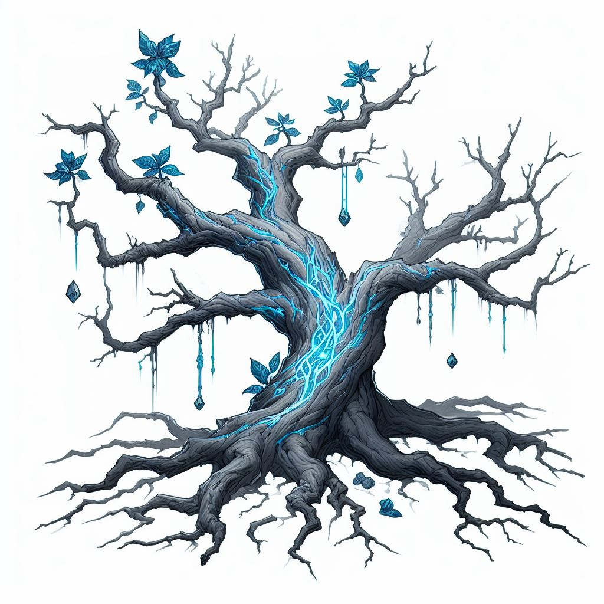

The town square's once lifeless and beloved giant has astounded the locals with an otherworldly rebirth. 
The Agetree, known by all, now stands adorned with azure leaves and veins tracing an ethereal pattern on its trunk. A possible spectacle of Sylvanus, the tree's revival has captivated the town, weaving a tale of resilience and enchantment across our fields. Whispers of this magical transformation spread, turning the dead tree into a herald of hope and wonder for this years Highharvestide.